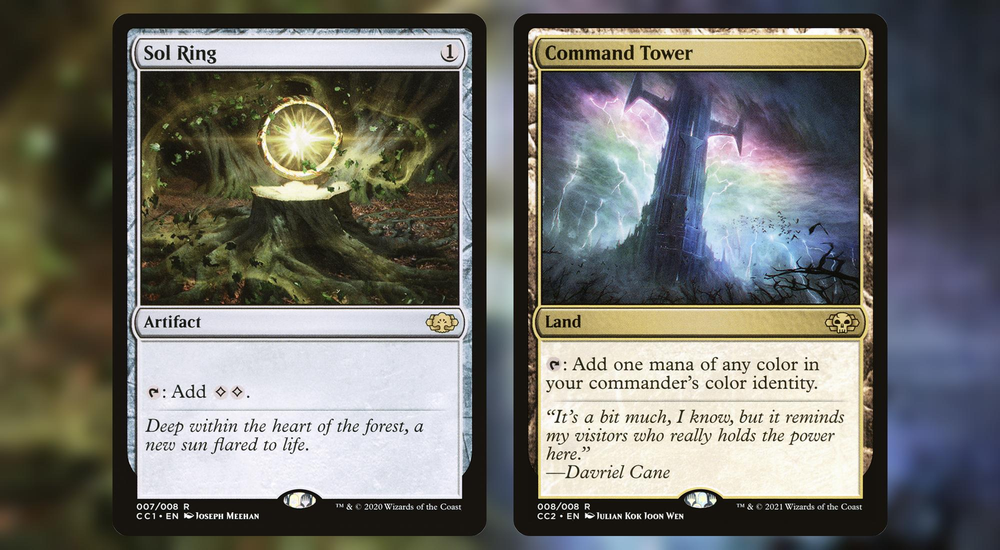
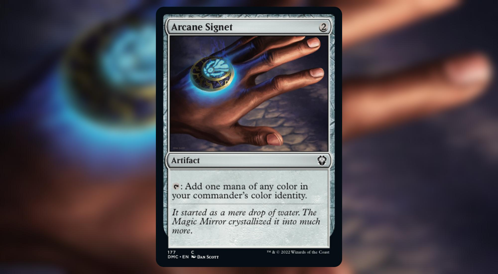
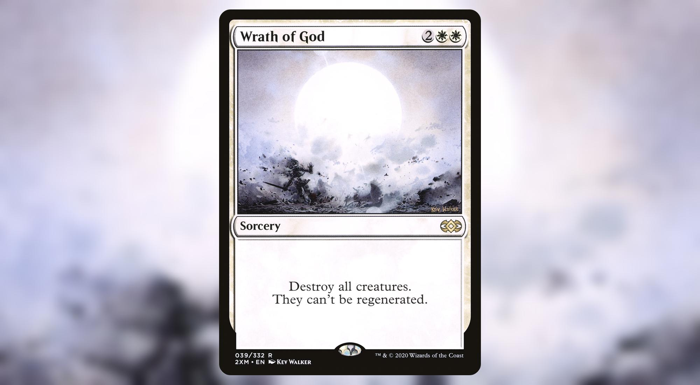
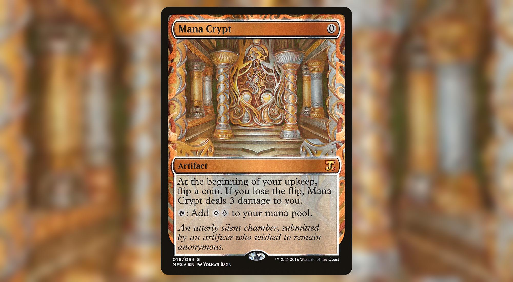
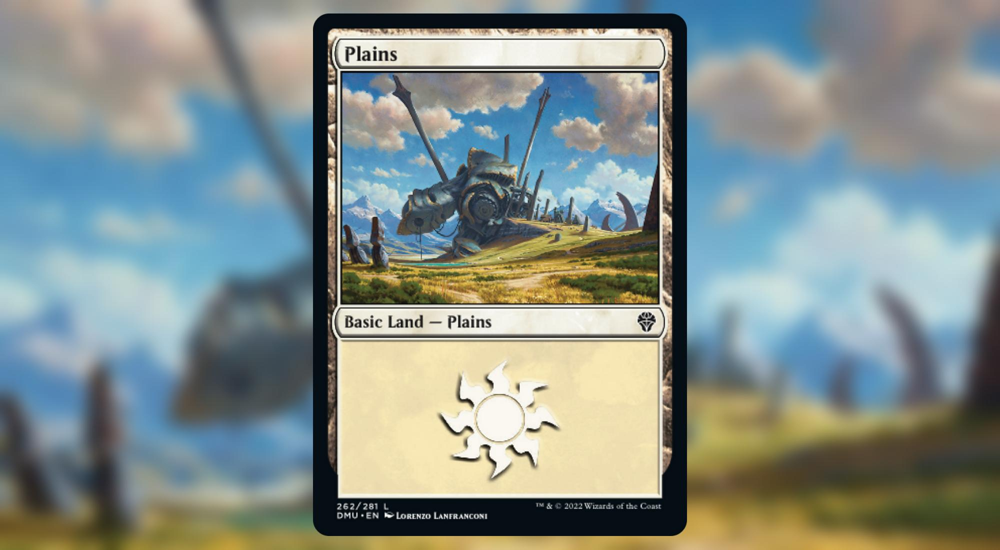
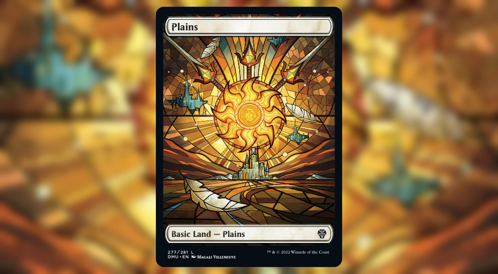
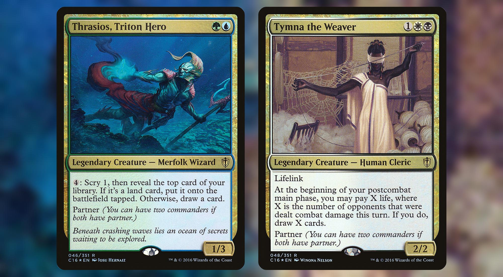
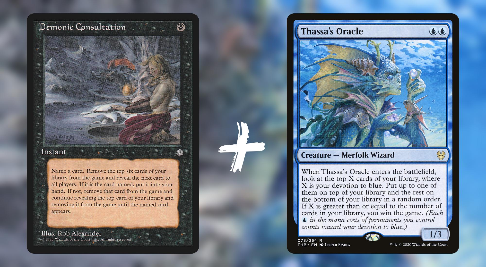
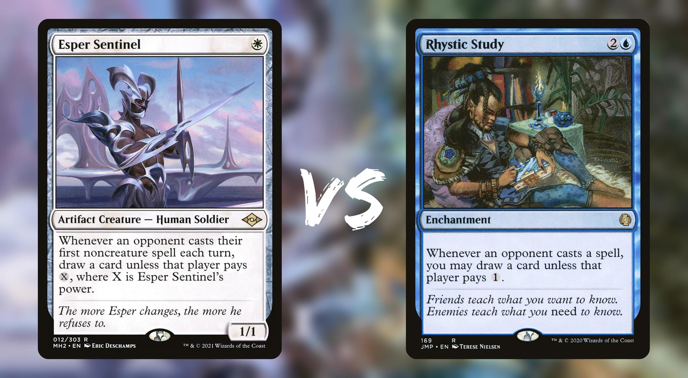
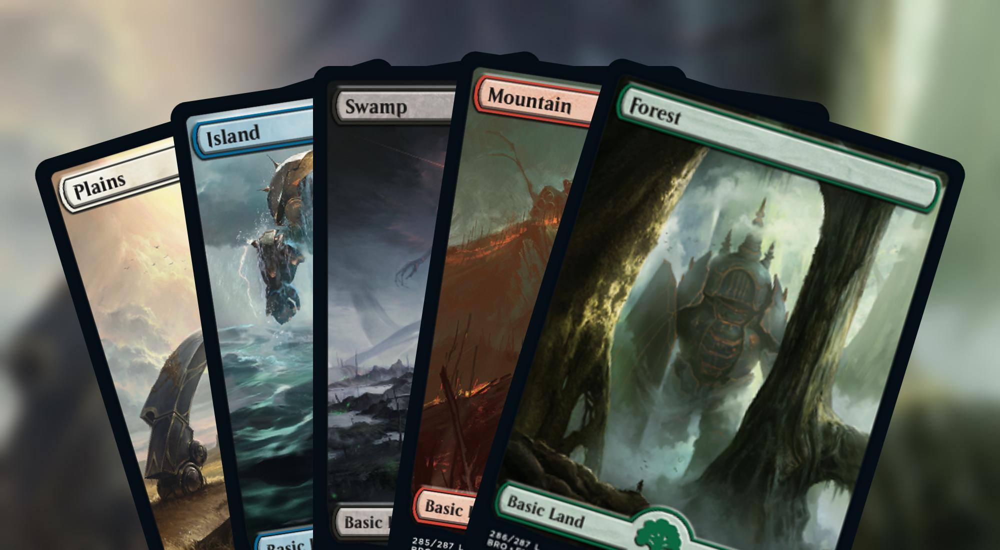

MTG Tools - Card Render Bot
Beautiful renders of your favorite cards
I've always found ugly how Twitter displayed Magic the Gathering™ card pictures.
This is why I went on an expedition to fix that and created a dedicated card rendering chatbot available through Messenger and Telegram.
Usage
ℹ️ This bot is publicly available and free to use.
Facebook Messenger
- Open Facebook Messenger
- Start a new discussion by navigating to https://m.me/108575720841085
- Press the
Get Startedbutton
Telegram
- Open Telegram
- Start a new discussion by navigating to https://t.me/cardrenderbot
- Press the
Startbutton
Simple examples
1. Single card
You can render a single card by typing it's full name:
💡 Example :
arcane signet
Result : 
You can also type only part of the full name if there's no ambiguity:
💡 Example :
wrath god
Result : 
2. Single card from a specific set
If you want to render a card from a specific set, you can prefix the name with the set code.
The following example will render Mana Crypt from the Kaladesh Inventions set:
💡 Example :
mps mana crypt
Result : 
3. Specific card from a specific set
Some sets contain cards with different illustrations. If you want a specific card, you can specify the set code and the collector number.
The following example will render the basic Plains from the Dominaria United set:
💡 Example :
dmu plains
Result : 
The following example will render the full art Plains from the Dominaria United set:
💡 Example :
dmu 277
Result : 
Advanced examples
1. Two cards, side by side
If you want to render two cards, side by side, just type two queries on two lines:
💡 Example :
Thrasios, Triton Hero
Tymna the Weaver
Result : 
2. Two-cards combo
If you want to render a two-cards combo, you can seperate the two queries by the + sign:
💡 Example :
Demonic Consultation + Thassa Oracle
Result : 
3. Two-cards battles
If you want to render a battle between two cards, you can seperate the two queries by the vs sign:
💡 Example :
Esper Sentinel vs Rhystic Study
Result : 
4. Three, four and five cards hands
If you want to render up to five cards, just type the queries on seperate lines:
💡 Example :
bro 278
bro 280
bro 282
bro 285
bro 286
Result : 
Closing Words
If you like it or want to be kept up to date, consider supporting me by: